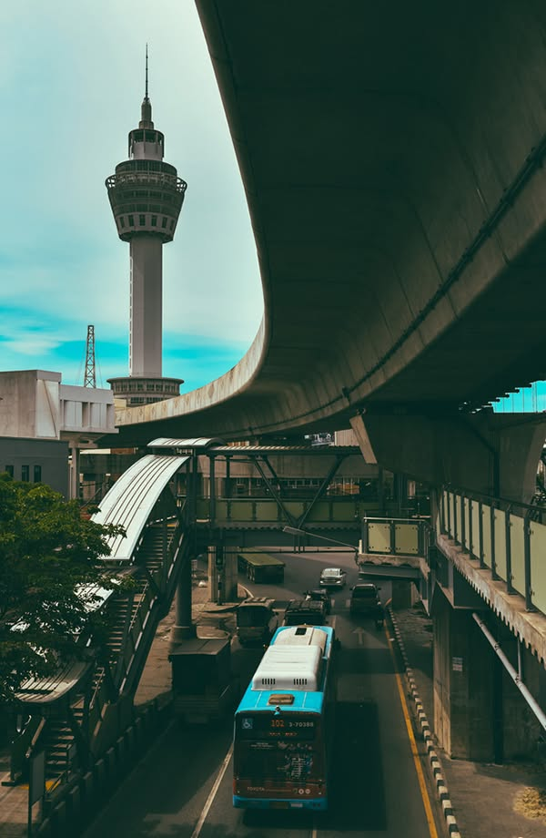
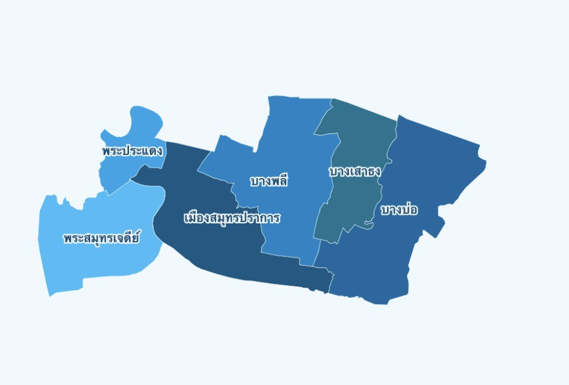

‹
›
ชื่อสถานที่
เกี่ยวกับ
วิธีการเดินทาง
—


จุดเช็คอิน
—
ตามประวัติศาสตร์ พื้นที่ทางภูมิศาสตร์ที่เรียกว่า ที่ราบดินดอนสามเหลี่ยมปากแม่น้ำใหม่ จึงระบุได้ว่าพื้นที่แถบนี้มีอายุประมาณ 1,000 กว่าปี เนื่องจากเมื่อประมาณ 2,000-3,000 ปีที่ผ่านมานั้นพื้นที่ทะเลอ่าวไทยกินลึกเข้ามาถึงบริเวณ จังหวัดราชบุรี นครปฐม สุพรรณบุรี สิงห์บุรี สระบุรี นครนายก ชลบุรี ส่วนพื้นที่ราบดินดอนสามเหลี่ยมปากแม่น้ำใหม่ (พื้นที่จังหวัดอ่างทอง พระนครศรีอยุธยาปทุมธานี นนทบุรี กรุงเทพฯ สมุทรปราการ) เกิดขึ้นจากตะกอนที่แม่น้ำหลายสาย พัดพามาที่ปากอ่าวไทยแล้วทับถมกันนานนับพันปีจนกลายเป็นแผ่นดิน อาจารย์ศรีศักร วัลลิโภดม นักวิชาการด้านมานุษยวิทยาและประวัติศาสตร์ได้ กล่าวถึงสภาพภูมิศาสตร์ของพื้นที่ราบดินดอนสามเหลี่ยมปากแม่น้ำใหม่ว่าพื้นที่บริเวณนี้มีสภาพเป็น "ทะเลตม" (ทะเลที่เป็นดินโคลนตะกอนจากดินที่แม่น้ำพัดพามาสะสมทับถมตามปากแม่น้ำ และมีความอุดมสมบูรณ์ด้วยสัตว์ครึ่งบกครึ่งน้ำนานาชนิด รวมทั้งพืชพันธุ์ต่างๆ) โดยมีผู้คนอยู่อาศัยและตั้งชุมชนในบริเวณทะเลตมนานแล้ว จังหวัด สมุทรปราการ หรือที่เรียกกันเป็นสามัญทั่วไปว่า "เมืองปากน้ำ" เพราะตั้งอยู่ปากน้ำเจ้าพระยาเป็นเมืองสำคัญทางประวัติศาสตร์ มาตั้งแต่โบราณเป็นเมืองหน้าด่านทางทะเลที่มีความสำคัญตลอดมาทุกยุคทุกสมัย " สมุทร"แปลว่า " ทะเล" และ "ปราการ" แปลว่า "กำแพง" สมุทรปราการ แปลว่า กำแพงชายทะเล หรือ กำแพงริมทะเล ซึ่งหมายถึงเมืองหน้าด่านชายทะเล หรือ ริมทะเลที่มีกำแพงมั่นคงแข็งแรงสำหรับป้องกันข้าศึกนั่นเอง นับว่าเป็นการ ให้ชื่อเมืองที่ถูกต้องและเหมาะสมตามความมุ่งหมายในการตั้งเมืองเป็นอย่างย ประวัติ ความเป็นมาของเมืองสมุทรปราการ สลับซับซ้อนสัมพันธ์ของเมือง 3 เมืองรวมกัน คือ เมืองพระประแดง เมืองนครเขื่อนขันธ์ และเมืองสมุทรปราการ จึงพอสรุปได้ว่าตามประวัติศาสตร์ อาณาจักรทวาราวดี คงเป็นอาณาจักรที่รุ่งเรืองและมีอาณาบริเวณอยู่ในที่ราบ ลุ่มในแม่น้ำเจ้าพระยา ทั้งหมดตลอดมาจนจรดอ่าวไทย ประชาชนพลเมืองคงมีเชื้อสายไทย มีความเจริญสูง ซึ่งอยู่ในราวพ.ศ. 1000 ถึง พ.ศ. 1300 ดังนั้น พื้นที่ของเมืองสมุทรปราการเดิม จึงอยู่ในอาณาจักรทวาราวดีมาแล้วตั้งแต่ในสมัยโบราณ ถ้าจะกล่าวย้อนหลังขึ้นไปในอดีต สมุทรปราการมีประวัติศาสตร์ความเป็นมาที่นำกล่าวได้ละเอียด รวม 5 สมัย ด้วยกัน คือสมัยลพบุรี สมัยสุโขทัย สมัยศรีอยุธยา สมัยธนบุรี และ สมัยรัตนโกสินทร์
ในสมัยขอมเรืองอำนาจได้ครอบครองอาณาจักรทวาราวดี หลักฐานทางประวัติศาสตร์กล่าวไว้ว่า เมืองสมุทรปราการเคยเป็นเมืองหน้าด่านของขอม คือในราว พ.ศ. 1400 อาณาจักรทวาราวดีเสื่อมอำนาจลง ระยะนั้น ขอมตั้งราชธานีอยู่ที่ "นครรม" ปัจจุบันอยู่ในกัมพูชา ได้ขยายอำนาจมาปกครองดินแดน แถบลุ่ม แม่น้ำเจ้าพระยา ไว้ทั้งหมด แล้ว ตั้งเมือง "ละโว้ (จังหวัดลพบุรีปัจจุบัน) เป็นราชธานีในลุ่มแม่น้ำเจ้าพระยา ทั้งได้ตั้งเมืองอโยธยา (จังหวัดพระนครศรีอยุธยาปัจจุบัน) และเมือง "พระประแดง" (เขตพระโขนง กรุงเทพมหานคร) เป็นเมืองหน้าด่าน การที่ขอมขนานนามเมืองหน้าด่านนี้ว่า 'พระประแดง" นั้นมีเตุผลชัดเจนอยู่มาก เพราะคำว่า " ประแดง" หรือ "บาแดง" แปลว่า
"คนเดินหมาย คนนำข่าวสาร" ซึ่งหมายถึงว่า เมืองพระประแดง เป็นเมืองหน้าด่าน ถ้ามีเหตุการณ์ ใดๆ เกิดขึ้น เป็นหน้าที่ของเมืองนี้จะต้องรีบแจ้งข่าวสารไปให้เมืองหลวง (ละโว้) ทราบโดยเร็ว จึงทำให้เชื่อได้ว่า เมืองปากน้ำสมุทรปราการ ก็คงเป็นท้องที่ส่วนหนึ่งของพระประแดงด้วย
จาก หนังสือ "ของดีเมืองสมุทรปราการ" วารสารสภาวัฒนธรรม จังหวัดสมุทรปราการ๒๕
ขอม ครองอำนาจเหนืออาณาจักรทวาราวดีเหนือลุ่มแม่น้ำเจ้าพระยา หรือเรียกอีกชื่อหนึ่งว่า " สุวรรณภูมิ" อยู่ชั่วระยะหนึ่งก็เสื่อมอำนาจลง คือในราว พ.ศ. 1800 ไทยน้อยซึ่งอพยพทยอยมาจากตอนใต้ของจีน ได้มาตั้งหลักแหล่งกระจัดกระจายอยู่ตรงแถบตอนเหนือของลุ่มแม่น้ำเจ้าพระยา และเคยอยู่ใต้อำนาจของขอมในสมัยขอมเรืองอำนาจนั้น ได้มีความเข้มแข็งสามารถรวบรวมกำลังขับไล่ขอมออกไปจากดินแดนบริเวณนั้นได้ สำเร็จ แล้วประกาศตัวเป็นอิสระ ตั้ง "กรุง สุโขทัย (จังหวัดสุโขทัยปัจจุบัน) เป็นราชธานี กษัตริย์องค์แรกที่ครองกรุงสุโขทัยคือ "พ่อขุนศรีอินทราทิตย์" ทำให้ไทยเริ่มมีอำนาจในดินแดนแหลมทอง (สุวรรณภูมิ) และเจริญรุ่งเรื่องเป็นอันดับ จนถึงรัชสมัย " พ่อขุนรามคำแหงมหาราช"กษัตริย์ผู้ทรงอานุภาพมาก สามารถต่ออาณาเขตสุโขทัยออกไปได้กว้างขวางที่สุด คือ ทิศเหนือ จดแคว้นลานนาไทย ทิศตะวันออกจรดเขมร (ซึ่งยังครองลุ่มแม่น้ำมูล) ทิศใต้ ครอบครองตลอดแหลมมาลายู ทิศตะวันตกครอบครองเมืองหงสาวดีของพม่าไปจด อ่าวเบงกอล ในสมัยสุโขทัยนี้ เมืองพระประแดงก็ขึ้นอยู่กับกรุงสุโขทัยตลอดมา จนถึงสมัยกรุงศรีอยุธยา
เป็นราชธานี
จาก หนังสือ "ของดีเมืองสมุทรปราการ" วารสารสภาวัฒนธรรม จังหวัดสมุทรปราการ๒๕๔๐
ในสมัยขอมเรืองอำนาจได้ครอบครองอาณาจักรทวาราวดี หลักฐานทางประวัติศาสตร์กล่าวไว้ว่า เมืองสมุทรปราการเคยเป็นเมืองหน้าด่านของขอม คือในราว พ.ศ. 1400 อาณาจักรทวาราวดีเสื่อมอำนาจลง ระยะนั้น ขอมตั้งราชธานีอยู่ที่ "นครรม" ปัจจุบันอยู่ในกัมพูชา ได้ขยายอำนาจมาปกครองดินแดน แถบลุ่ม แม่น้ำเจ้าพระยา ไว้ทั้งหมด แล้ว ตั้งเมือง "ละโว้ (จังหวัดลพบุรีปัจจุบัน) เป็นราชธานีในลุ่มแม่น้ำเจ้าพระยา ทั้งได้ตั้งเมืองอโยธยา (จังหวัดพระนครศรีอยุธยาปัจจุบัน) และเมือง "พระประแดง" (เขตพระโขนง กรุงเทพมหานคร) เป็นเมืองหน้าด่าน การที่ขอมขนานนามเมืองหน้าด่านนี้ว่า 'พระประแดง" นั้นมีเตุผลชัดเจนอยู่มาก เพราะคำว่า " ประแดง" หรือ "บาแดง" แปลว่า
"คนเดินหมาย คนนำข่าวสาร" ซึ่งหมายถึงว่า เมืองพระประแดง เป็นเมืองหน้าด่าน ถ้ามีเหตุการณ์ ใดๆ เกิดขึ้น เป็นหน้าที่ของเมืองนี้จะต้องรีบแจ้งข่าวสารไปให้เมืองหลวง (ละโว้) ทราบโดยเร็ว จึงทำให้เชื่อได้ว่า เมืองปากน้ำสมุทรปราการ ก็คงเป็นท้องที่ส่วนหนึ่งของพระประแดงด้วย
จาก หนังสือ "ของดีเมืองสมุทรปราการ" วารสารสภาวัฒนธรรม จังหวัดสมุทรปราการ๒๕
ต่อมาในต้น พ.ศ. 1893 พระเจ้าอู่ทอง ได้ทรงอพยพผู้คนจากสุพรรณบุรี มาสร้างพระนครขึ้นใหม่ที่ริมหนองโสนขนานนามว่า " กรุงเทพทวาราวดีศรีอยุธยา" พระเจ้าอู่ทองได้โปรดเกล้าฯ ให้ตั้งเมืองหน้าด่านทั้ง 4 ทิศ คือ ทิศเหนือเมืองลพบุรี ทิศตะวันออก เมืองนครนายก ทิศตะวันตก เมืองสุพรรณบุรี ทิศใต้ เมืองพระประแดงเมืองหน้าด่านเหล่านี้ โปรดๆให้สร้างป้อมปราการที่มั่นคงแข็งแรงทุกเมือง แต่เมื่อถึงรัชสมัยของสมเด็จ พระมหาจักรพรรดิพ.ศ. 2091 เกิดสงครามข้างเผือกระหว่างไทยกับพม่า พระเจ้าตะเบ็งชะเวตี้ยกทัพใหญ่มาตีกรุง ศรีอยุธยา ทางกรุงยกทัพไปตั้งรับทัพข้าศึกที่เมืองสุพรรณบุรี แต่ทานกำลังไม่อยู่ ทัพพม่าสามารถยกเข้ามาถึง ชานพระนครได้ หลังจากพม่ายกทักลับไปแล้วสมเด็จพระมหาจักรพรรดิทรงเห็นว่า เมืองสุพรรณบุรี แม้จะมีค่ายคูประตูหอรบพร้อม ก็ยังรับศึกใหญ่ไม่อยู่ ไม่มีประโยชน์ต่อการป้องกันศัตรูได้อีกแล้ว มิหนำซ้ำยังเป็นที่สำหรับ ข้าศึกพักอาศัย และรวบรวมไพร่พลเสบียงอาหารได้อีก จึงโปรดฯ ให้รื้อป้อมค่ายและกำแพงลงเสีย พร้อมทั้งป้อมกำแพง ที่เมืองลพบุรี และเมืองนครนายกด้วย ให้คงเหลือไว้แต่ที่เมืองพระประแดง สำหรับเป็นหน้าด่านทางทะเลเพียงแห่งเดียว
เมืองพระประแดง ตามที่ได้กล่าวมาแล้วแต่ต้น เป็นเมืองเก่าแก่นับพัน ๆ ปี ตามหลักฐานไม่ทราบแต่ชัดว่า เริ่มสร้างในสมัยกษัตริย์ขอมองค์ใด พอจะมีหลักฐานแน่ชัดก็ในสมัยกรุงศรีอยุธยานีเอง ดังปรากฏในหนังสือ พระราชพงสาว
ดาร ฉบับพระราชหัตถเลขาว่า "เมื่อปีมะเมีย จุลศักราช ๘๖๐ (พ.ศ. ๒๐๕๑) ขุดชำระคลองสำโรง ได้เทวรูปทองสัมฤทธิ์ เองค์ ตรงที่คลองสำโรงต่อคลองทับนาง และเทวรูปนั้นมีอักขระจารึกชื่อว่า "พระยาแสนตา" องค์หนึ่ง และ"บาทสังขกร" อีกองค์หนึ่ง สมเด็จพระมหารามาธิบดี๒ โปรดฯ ให้สร้างศาลประดิษฐานไว้ที่เมือง พระประแดง (ยังเป็นเมืองอยู่ในสมัย นั้น) และต่อมา เมื่อสมเด็จพระมหาธรรมราชาธิราชครองราชย์สมบัติ พระยาละแวก เจ้าเมืองกัมพูชาได้ยกทัพเรือมาตีกรุง
ศรีอยุธยาในปีมะแม จุลศักราช ๙๒๑ (พ.ศ. ๒๒๐) แต่ตีไม่ได้ดังปรารถนาเมื่อล่าทัพกลับ ได้ให้เอาเทวรูป ๒ องค์ที่เมืองพระประแดงไปเมืองเขมรด้วยจึงทำให้เชื่อมั่นว่า เมืองพระประแดง เป็นเมืองหน้าด่านทางทะเลที่สำคัญ มาทุกยุคทุกสมัย เพราะเป็นเมือง ที่อยู่ปากน้ำจดอ่าวไทยเมื่อ กล่าวมาถึงตอนนี้ จึงเห็นได้ว่า "เมืองปากน้ำ" ซึ่งเรียกกันเป็นสามัญติดปากคนทั่วไปนั้นเดิมมิได้ตั้งอยู่
"ปากน้ำบางเจ้าพระยา" หรือตำบล "ปากน้ำ" ดังในปัจจุบันนี้ เพราะตามที่กล่าวมาแล้วในสมัยนั้น ปากน้ำของ แม่น้ำเจ้าพระยา ลึกเข้าไปถึงบริเวณตอนใต้ของกรุงเทพมหานคร คือเขตพระโขนงในปัจจุบัน ต่อมาเมื่อชายทะเล แปรสภาพเป็นพื้นดินทับถมตื้นเขินจนกลายเป็นที่ราบงอกออกมามากเข้า เมื่อพระประแดงเดิม ซึ่งเคยเป็นเมืองปากน้ำ ก็ห่างไกลจากเมืองปากน้ำไกลไปทุกที เมืองพระประแดง จึงถูกโยกย้ายเปลี่ยนตำแหน่งที่ตั้ง เพื่อความเหมาะสมกับฐานะเมืองหน้าด่านทางทะเล ตอนหลังปรากฏว่า เมืองพระประแดงมาตั้งอยู่ที่ ตำบลราษฎร์บูรณะ (คนละที่กับเขตราษฎร์บูรณะ กรุงเทพมหานคร) ตอนที่เคยเป็นสถานที่ตั้งสถานีบางนางเกรง สถานีรถไฟสายปากน้ำ (ทางรถไฟสายปากน้ำถูกรื้อเสีย ในสมัยรัฐบาล จอมพลสฤษฎ์ ธนะรัชต์) ตรงบริเวณที่เคยเป็นที่ตั้งของโรงเรียน เกริกวิทยาลัย
ดังในสาราณุกรมไทย ฉบับราชบัณฑิตยสถาน กล่าวไว้ดังนี้ "ต่อมาเมื่อพ.ศ. ๒๑๒๓ จึงปรากฏว่า มีเมืองพระประแดงตั้งใหม่ ที่ตำบล ราษฎร์บูรณะ ตั้งอยู่ฝั่งตะวันออกของลำน้ำเจ้าพระยา (ราวสถานีนางเกรง รถรางสายปากน้ำ) ต่อมาเมืองพระประแดง น่าจะย้ายมาอยู่ฝั่งตะวันตกของลำน้ำเจ้าพระยาตามเดิม" ครั้นถึง สมัยกรุงธนบุรีสมเด็จพระเจ้าตากสินมหาราชได้ทรงให้รือกำแพงเมืองเก่า เพื่อเอาอิธไปสร้างราชธานี ที่กรุงธนบุรี เมืองพระประแดง ที่ราษฎร์บูรณะ จึงหาซากไม่พบจนทุกวันนี้
เนื้อหา...
เนื้อหา...
เนื้อหา...
เนื้อหา...
เนื้อหา...
เนื้อหา...
เนื้อหา...